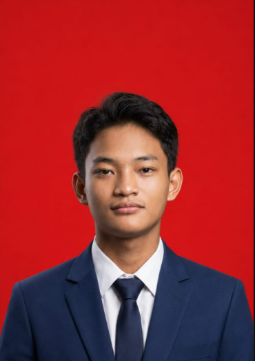

Berfokus pada konfigurasi jaringan komputer, sistem operasi Linux, manajemen server, VoIP, serta aktif berkompetisi di ajang Capture The Flag (CTF). Siap untuk magang industri.

Tentang Saya
Siswa kelas XI TKJ 1 di SMK Rajasa Surabaya dengan minat mendalam pada infrastruktur jaringan, administrasi sistem Linux, dan keamanan siber. Memiliki pengalaman praktik langsung dalam perakitan komputer, MikroTik, web server, hingga integrasi perangkat IoT.
SMK Rajasa Surabaya
Teknik Komputer & Jaringan (TKJ)
Juli 2025 - SekarangKompetensi Teknis
Konfigurasi jaringan komputer, routing/switching, dan manajemen perangkat MikroTik.
Manajemen dan administrasi sistem operasi berbasis open-source.
Pengelolaan server web dan sistem komunikasi suara digital.
Pengembangan skrip otomatisasi dan prototyping perangkat keras.
Portofolio & Prestasi
Melakukan crimping kabel LAN RJ45, deploy web server via aaPanel, konfigurasi jaringan lokal, serta membangun proyek pakan ikan otomatis menggunakan Arduino Uno ATmega328P dengan sensor ultrasonik & servo.
Instalasi server Asterisk dan konfigurasi telepon nirkabel (VoIP) menggunakan aplikasi klien Zoiper dan MicroSIP untuk komunikasi internal.
Berpartisipasi dalam COMPFEST 18 (UI) dan sukses meraih peringkat 5 besar pada ajang CTF Cybreak 2026 (ITS). Serta aktif mempersiapkan diri untuk IONIC PENS 2026 dan POLSRI CTF 2026.
Let's Connect
jodhisatyapradipta@gmail.com
+62-857-4543-3778
Surabaya, Jawa Timur